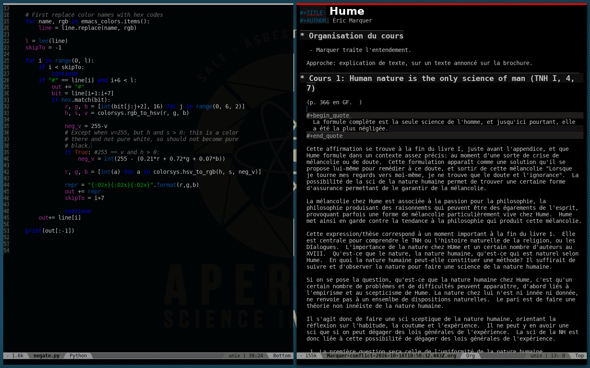

Leuven-theme
Table of Contents

Looking for an awesome Emacs color theme? Looking for one of the best light themes for Org mode, and for other modes too? Here’s the place to find one!
Welcome to the custom Leuven theme, an elegant and popular color theme for light backgrounds, with built-in style for many components such as Org mode, Gnus, Dired+ and EDiff. Make it yours!
<script src=“http://platform.twitter.com/widgets.js”></script> <a href=“https://twitter.com/share” class=“twitter-share-button” data-via=“f_niessen”>Tweet</a>
1 Quotations
“Your Org-enhancing color-theme ”leuven“ ROCKS! … and not just for Org.”
– Johan S.
“Amazing theme. I’ve been switching themes like socks the past 3 years and
finally found a theme that fits me exactly.”
– zeltak
“The Leuven theme has quickly become my favorite – the colors are great and the
visual details for Org mode are just wonderful.”
– Steve B.
“I’m using leuven theme, which is a great theme for Org-mode. […] I cannot
use another emacs-theme.”
– Joseph Vidal-Rosset
“Leuven theme is awesome!”
– Joost Diepenmaat
“I still am really enjoying using the theme – wish I’d had it years back…”
– V.
“I’ve been using leuven-theme, which is a fantastic theme for Org-mode files.”
– thnetos
“I love leuven for it’s magit faces. E.g. the different sections of the magit
status screen stand out much better with leuven than with any other theme I’ve
tried. It’s a good looking theme but what makes it stand out is the attention
the author has put into all of the different faces you find everywhere.”
– UnwashedMeme
2 Screenshots
2.1 Org buffer (with code)
Fontified source code blocks:

Note that, to get the whole heading lines fontified, you need to add the
following line into your .emacs file:
;; Fontify the whole line for headings (with a background color). (setq org-fontify-whole-heading-line t)
2.2 Agenda
Agenda with task list:

2.3 NEW ! Dark version
There is now a dark version of Leuven-theme, automagically built by Thibault Polge.

It surely will be improved over time, but this is a major first step into the right direction. A big thanks to him!
3 Install it
Though Leuven-theme has been added in Emacs 24.4 (October 2014), you can get a fresh version of it, at any time, from MELPA or from GitHub.
3.1 Install the ELPA package
In Emacs 24+, M-x list-packages is the recommended way to list and install
packages.
MELPA keeps stable releases of Leuven theme.
See http://melpa.milkbox.net/#installing for more information on how to install
leuven-theme:
Just add MELPA to
package-archives,;; Archives from which to fetch. (setq package-archives (append '(("melpa" . "http://melpa.milkbox.net/packages/")) package-archives))
- Call
list-packages, - Search for
leuven-theme, - Mark it for installation with
i, and - Execute the install action with
x.
3.2 Install the Git version
Get the full Git repository at https://github.com/fniessen/emacs-leuven-theme using the following command:
git clone git://github.com/fniessen/emacs-leuven-theme.git
Add the following in your .emacs file:
(add-to-list 'custom-theme-load-path "/path/to/emacs-leuven-theme") (load-theme 'leuven t) ; For Emacs 24+.
Restart Emacs.
3.3 Customize it
You don’t like my large Org level-1 headings or my large Org agenda-date heading (though I made them larger on purpose!)?
Then, set the variable leuven-scale-outline-headlines to nil before the theme is
loaded.
(setq leuven-scale-outline-headlines nil) (setq leuven-scale-org-agenda-structure nil)
The value can be:
nilfor unscaled,tfor using the theme default, or- a scaling number (that you choose to your liking!).
One way to do that is to it through M-x customize-variable and then restart
Emacs.
4 Contributing
4.1 Issues
Report issues and suggest features and improvements on the GitHub issue tracker.
4.2 Patches
I love contributions! Patches under any form are always welcome!
4.3 Donations
If you use the emacs-leuven-theme project and feel it is making your life better and easier, you can show your appreciation and help support future development by making a donation through PayPal. Thank you!
Regardless of the donations, emacs-leuven-theme will always be free both as in beer and as in speech.
5 License
Copyright (C) 2003-2017 Free Software Foundation, Inc.
Author: Fabrice Niessen
Keywords: emacs color theme
This program is free software; you can redistribute it and/or modify it under the terms of the GNU General Public License as published by the Free Software Foundation, either version 3 of the License, or (at your option) any later version.
This program is distributed in the hope that it will be useful, but WITHOUT ANY WARRANTY; without even the implied warranty of MERCHANTABILITY or FITNESS FOR A PARTICULAR PURPOSE. See the GNU General Public License for more details.
You should have received a copy of the GNU General Public License along with this program. If not, see http://www.gnu.org/licenses/.